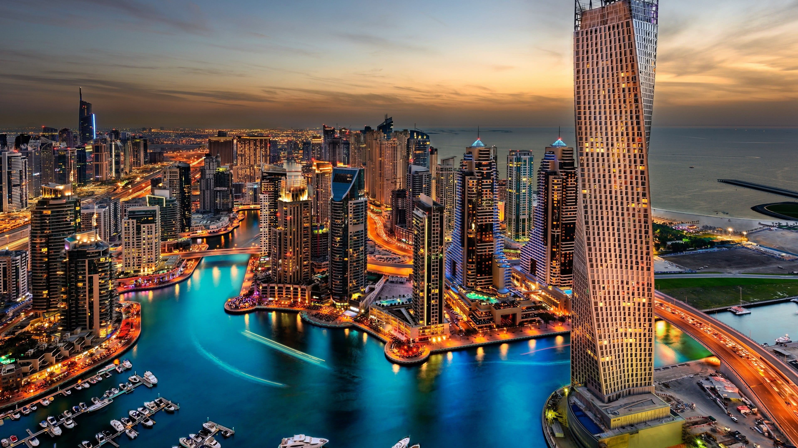
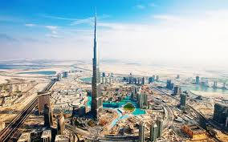

Dubai

Можете да свържете Дубай с неговите рекордни небостъргачи и тази репутация е добре спечелена. Кулата на Сантяго Калатрава в Дубай Крийк ще надмине Бурж Халифа като най-високата сграда в света, когато бъде завършена.

„Това е откритото, което наистина докосна Дубай. 6 общо класиране “

„Градът предлага изживявания на открито, които се нареждат на пето място по качество, и попадна в Топ 10 за безопасност и за времето, и двете на номер. 8. ”